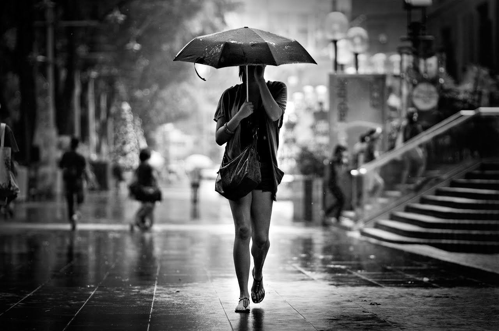

|
TutorialeCreeaza o legatura cu subiectul tau Foloseste Distante Focale Mari "Trage" Wide Incearca obiectivele de 50mm Alb Negru Invata tot ce poti despre lumina Nu iti fie frica sa folosesti blitzul Invata setarile camerei foto Cauta naturalete Implica cadre in miscare |
||
|---|---|---|
"Trage" Alb NegruFotografia Alb Negru nu este pierduta doar ca traim intr-o era a culorilor. Unii dintre cei mai buni fotografi de fashion sau portret realizeaza fotografii in alb negru. In fotografia Alb Negru este vorba mai putin despre culoare, si mai mult despre stare, lumina, compozitie si textura. Fotografiind Alb Negru vei putea sa iti dezvolti creativitatea in materie de compozitie. Fotografia din dreapta este capturata Alb Negru direct din camera foto. |

||